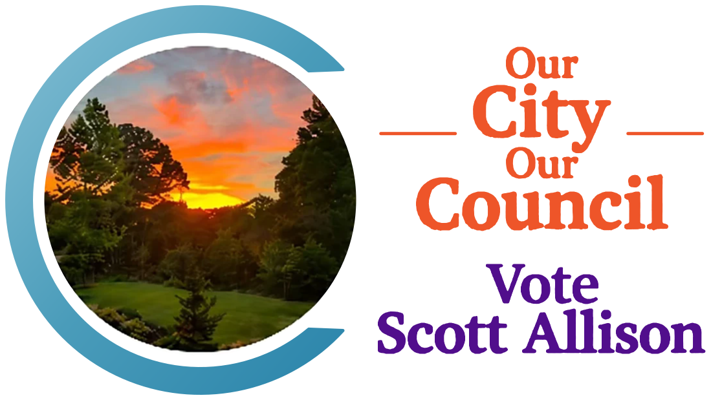

Early voting
- October 19–31
- Monday–Saturday
- 8:30 a.m.–6 p.m.
- Closed Sunday
Pickens County lists the early voting locations.
Clemson, South CarolinaNonpartisan election

Election Day: Tuesday, November 3, 2026Polls open 7 a.m.–7 p.m.
Clemson grad, class of ’86. Thirty-five years in public finance banking. I’d like to put that to work for the city I call home.
Election Day
Tuesday, November 3, 2026
Polls open
7 a.m.–7 p.m.
On Election Day
On the ballot
Three at-large council seats
Nonpartisan race, four-year terms
Meet Scott
I’ve spent 35 years in public finance banking, helping cities, states, utilities, and universities put together the financing for what they build: water and sewer systems, airports and stadiums, campus projects. I graduated from Clemson in 1986, and I live here now. I know how governments and universities think, and I’d like to bring that to the Council as this city works out how to grow.
Most of what you read here comes from my published VOTE411 answers; the class year is from my campaign Facebook page. Draft wording, for Scott to approve.
Photos coming: family, and around Clemson.
Where I stand
The four things I’m running on, in no particular order.
Every housing project gets judged on its own merits. Big student and commercial projects belong on the major roads, not up against people’s homes. And you should hear about a project earlier than the law requires.
The student housing crunch is the biggest issue we have. I’ll work with the University and hold it to building enough housing on campus, and I’ll bring real ideas on how to pay for it.
Sidewalks, bike paths, turn lanes, and transit. Traffic relief and safety for everybody, whether you’re driving, walking, or biking.
I’ve spent a career reading budgets and bond deals. I’ll bring that eye to how the city spends your tax dollars and every other dollar it takes in.
Short versions of what I told the League of Women Voters.
Clemson, South Carolina
Our City. Our Council.
Make a plan
Everything below comes from Pickens County and the state election office. Check your own details with them before you go.
Pickens County lists the early voting locations.
Tuesday, November 3, 2026
Polls open 7 a.m.–7 p.m.
October 19 – November 3, 2026
Early voting and Election Day at a glance
Look up your voter information and polling place with the state election office.
Look over the sample ballot ahead of time.
If getting one is hard, the state explains how to vote with a reasonable impediment affidavit.
Photo ID and reasonable impediment guidance (opens in a new tab)
Ways to help
A council race is a small one. It comes down to people talking to the people next door. Give an hour, put up a yard sign, or just keep up with how it’s going. I’d be grateful for any of it.
Contact the campaign
Election Day Tuesday, November 3
Polls open 7 a.m.–7 p.m.